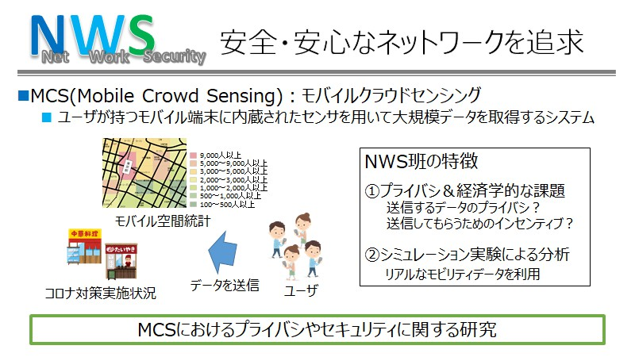

NWS班とは？
NWS: Net Work Security
NWS班では，モバイルクラウドセンシング(MCS)について研究を行っています．MCSとは，ユーザが持つモバイル端末に内蔵されたセンサを用いて大規模データを取得するシステムです．例えば，最近話題となったモバイル空間統計では，ユーザの位置情報を収集することで混雑度の統計情報を提供しています．また，第三者の目線から店舗でのコロナ対策実施状況をチェックするビジネスも存在し，広義的にはMCSに分類されます．現在は，MCSによって収集されたデータのプライバシやデータを送信してもらうためのインセンティブについて検討しています．
Keyword
ネットワークセキュリティ,モバイルクラウドセンシング,プライバシ,インセンティブ
NWS班イメージ

こんな人に向いています
ネットワークセキュリティに興味がある人
セキュリティに興味があれば, 現在のテーマにこだわらなくて大丈夫です.
今の時点でセキュリティの知識が豊富である必要はありません.
安心・安全なネットワークの実現に興味がある人は是非．
モバイルクラウドセンシングシステムに興味がある人
身近なところでも現在地の天気情報を人々が入力することで情報を集めているアプリケーションなどがあると思います.
モバイルクラウドセンシングシステムをより良いシステムにすることに興味がある人は是非.
NWS班メンバー（2021年度版）
修士2年
溝口 貴大
モバイルクラウドセンシングのインセンティブメカニズムに関する研究をしています. 情報学分野だけでなく, 経済学的分野の観点からも研究できることがこの班の魅力です！班内で定期的にミーティングを行っており, 分からないことがあっても先輩に相談できる環境があります！
修士1年
松浦 祐一郎
B4まで他の研究室でやっていた研究を引き継いでやっています。先生はしっかりしているし、先輩も優しく過ごしやすい研究室です！
学部4年
松下 尚樹
大衆(クラウド)からセンシングデータを集めるモバイルクラウドセンシングについて研究しています。研究で分からないことがあっても先輩に相談しやすい環境が整っています！